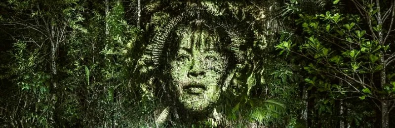
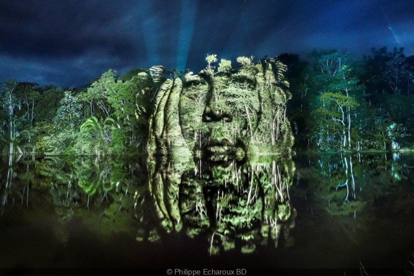
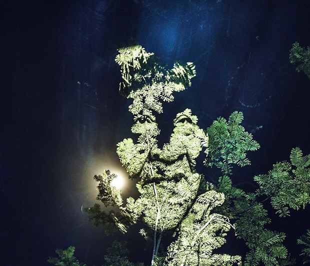
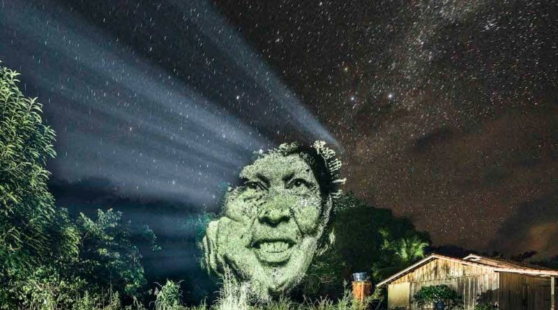

<!-- para inicia uma pagina web usa-se o codigo html - 5-->
  <!-- comentarios que eu posso fazer usando esses codego-->
<!DOCTYPE html>
<html>
    <head>
            <!-- meta são tags que são configurações basicas da web ex: compatibilidade de navegador m caracteris-->
        <!--usado para aparecer caracteres em outros idiomas-->
        <meta charset="UTF-8" /> 
        <meta http-equiv="X-UA-Compatible" content="IE=edge">
        <!--usado para a tela se ajudas nos aparelhos cel ou pc-->
        <meta name="viewport" content="windth=divece-width, initial-scale=1.0" /> 
        <meta name="description" content="texto descritivo da pagina web" />
        <meta name="author" content="Oyexiener" />
        <!-- incluir bootstrap css copiando o codigo no site e colndo aqui no head-->
        <link href="https://cdn.jsdelivr.net/npm/bootstrap@5.1.3/dist/css/bootstrap.min.css" rel="stylesheet" integrity="sha384-1BmE4kWBq78iYhFldvKuhfTAU6auU8tT94WrHftjDbrCEXSU1oBoqyl2QvZ6jIW3" crossorigin="anonymous">
        <!--incluir bootstrap js -->
        <script src="https://cdn.jsdelivr.net/npm/@popperjs/core@2.10.2/dist/umd/popper.min.js" integrity="sha384-7+zCNj/IqJ95wo16oMtfsKbZ9ccEh31eOz1HGyDuCQ6wgnyJNSYdrPa03rtR1zdB" crossorigin="anonymous"></script>
<script src="https://cdn.jsdelivr.net/npm/bootstrap@5.1.3/dist/js/bootstrap.min.js" integrity="sha384-QJHtvGhmr9XOIpI6YVutG+2QOK9T+ZnN4kzFN1RtK3zEFEIsxhlmWl5/YESvpZ13" crossorigin="anonymous"></script>
        <style>
            body{background-color: black;}
            div,li, main{ display: inline;text-align: center;color: azure;  }
            h1,h2,h3,h4,h5,p,a{
                font-family: Verdana, Geneva, Tahoma, sans-serif; color: azure; }
        </style>

        <title>Home</title>

<link rel="stylesheet" href="style.css">
        <link rel="stylesheet" type="text/css" href="estilos.css" />

        <style>
            .cinza{ background-color: grey ; }
        </style>

        
<!--para adicionar um alerta na pagina tem que add o script de javascrit como abaixo-->
        <script type="text/javascript">
            alert("Seja bem vindo")
        </script>
<main>
    <!-- informações do corpo da pagina web-->
    <body>
    ><center>
        <!--Criar um menu para a pagina, utilizando conteiner -->
        <div class="Conainer-fluid">
            <div class="row">
               <div class="col-lg-3 col-md-3 col-sm-3 cinza" > <a href="Index.html">Home</a></div>
                <div class="col-lg-3 col-md-3 col-sm-3 cinza" > <a href="Noticias.html">Noticias</a></div>
                <div class="col-lg-3 col-md-3 col-sm-3 cinza" > <a href="formulario.html">Cadastro</a></div>
                <div class="col-lg-3 col-md-3 col-sm-3 cinza" > <a href="Fale conosco.html">Fale conosco</a></div>
    
            </div>
        </div>
    </center>
    </body>

<!--h1 é a fonte de titulo aumenta a letra de tamanho-->
    <h1>Povo Paiter Suruí </h1>
    <!-- h2 é o texto da pagina tamanho menor que o h1-->
    <!-- são paragrafos <P>>-->
       <p> Quem somos: Fizemos contato com a Funai pela necessidade de uma trégua nos conflitos, naquele momento estavam sendo muito pressionados pela migração. Segundo alguns mais velhos, estavam cansados de tanta guerra, seja contra outros grupos indígenas, seja na defesa do seu território. Assim também com a necessidade de obter os facões, machados e facas oferecidos pelos sertanistas. Hoje somos aproximadamente 1.900 Paiter Suruí vivem nas 28 aldeias localizadas na Terra Indígena, estas aldeias mantêm estreitas relações entre si, determinadas por laços de parentesco e casamento.  Vivemos em um território de 249.000 hectares (Terra Indígena Sete de Setembro) que dista em torno de 50 a 60 Km da BR 364. A área se situa parte em Rondônia e parte em Mato-Grosso, foi homologado em 17 de outubro de 1983.  Falamos a língua do grupo Tupi e família Mondé e o uso fluente da língua, a manutenção da concepção arquitetônica tradicional e a produção de objetos cultural demonstram a força da cultura Paiter Suruí. No entanto, a proximidade com as áreas de colonização e centros urbanos tem contribuído para a deterioração de importantes aspectos da cultura como a proximidade com os mitos, a manutenção da religiosidade e intimidade com os elementos da natureza. A sociedade Paiter Suruí é composta por grupos patrilineares: Gameb, Gabgir, Makor e Kaban. Cada uma das aldeias Suruí é uma unidade autônoma, na qual o poderio político é exercido por um chefe (labiway).
        <!-- para coloca umm link devese coloca <a href o link e se quiser que abra na mesma aba coloque self se for em outra aba coloque blank-->
            <a href="https://paiter-surui.com" title="Site Paiter" target="_self"> 
                <center>
                <span>Conheça nossa associação Indigena:</span><button>Metareilá</button><br></a>
                <br>
</h1>
</center>
<style>
    body{
        font-family: Verdana, Geneva, Tahoma, sans-serif;
        }
    
    h1,span{color: azure;}
</style>
<!--inserir carrosel do bootstraps-->
<div id="carouselExampleIndicators" class="carousel slide" data-bs-ride="carousel" >
    <div class="carousel-indicators">
      <button type="button" data-bs-target="#carouselExampleIndicators" data-bs-slide-to="0" class="active" aria-current="true" aria-label="Slide 1"></button>
      <button type="button" data-bs-target="#carouselExampleIndicators" data-bs-slide-to="1" aria-label="Slide 2"></button>
      <button type="button" data-bs-target="#carouselExampleIndicators" data-bs-slide-to="2" aria-label="Slide 3"></button>
    </div>
    <div class="carousel-inner" >
      <div class="carousel-item active">
        
      </div>
      <div class="carousel-item">
        
      </div>
      <div class="carousel-item">
        
      </div>
    </div>
    <button class="carousel-control-prev" type="button" data-bs-target="#carouselExampleIndicators" data-bs-slide="prev">
      <span class="carousel-control-prev-icon" aria-hidden="true"></span>
      <span class="visually-hidden">Previous</span>
    </button>
    <button class="carousel-control-next" type="button" data-bs-target="#carouselExampleIndicators" data-bs-slide="next">
      <span class="carousel-control-next-icon" aria-hidden="true"></span>
      <span class="visually-hidden">Next</span>
      <br>
    </button>
  </div>
  <center> <li><h1>Projetos:</h1>
    <p>Reflorestamento<a href="https://www.paiter-surui.com/post/limpeza-das-%C3%A1reas-de-reflorestamento-pamine" title= Reflorestamento> clike aqui </a> </a></p>
    <p>Turismo Paiter<a href="https://www.paiter-surui.com/turismo" title= Turismo_Paiter> clike aqui</a></p>
    <p> Café - robusta amazonica<a href="https://www.paiter-surui.com/post/negocie-produtos-de-extrativismo-ambiental-e-sustent%C3%A1vel-saiba-como" title= Café_Robeusta_Amozonica> clike aqui</a></p></li>
  </center>        
           <!-- para add imagem basta add 
                <center>  </center>

            </p>
            <!-- são paragrafos <P>>-->
            <p> praticando com as aulas gravadas da <a href="https://app.gama.academy/jornada/6fb4d4-cripto-dev-fase-2/playlist/aa948bb6-36bc-412d-928c-26bce7d62456/aula/9/" title="GAMA"> Gama</a> 
</main>


    </head>


</html>